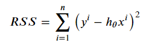

The Real Cost Function
Residual Sum of Squares vs Mean Squared Error

RSS is a fine function for calculating the minimum cost of a function but the number may grow too large, and sometimes, might cause an overflow error. To counter this, we add some elements to our function, and that is by multiplying the equation with 1/n, where n is the number of data points. The equation looks like this

This is called MSE or Mean Squared Error. As the name suggest, we calculate the mean of the points by dividing the whole equation by the total number of data points.